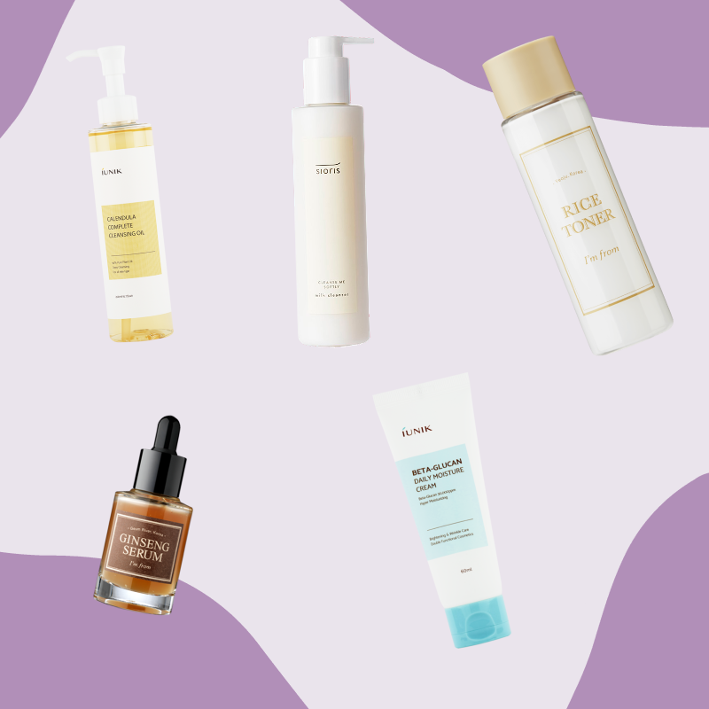

Description: Exclusive to Korean-Skincare Laila is the embodiment of beauty, grace and compassion. But don't let the name of her kit fool you, she also has a love for martial arts, and tackles her fears head on. Laila is a powerhouse when it comes to fitness, fashion, and cosmetics.
Laila is the embodiment of beauty, grace and compassion. But don't let the name of her kit fool you, she also has a love for martial arts, and tackles her fears head on.
Laila's instagram: @lailatahri
Products have been hand picked by Laila, and soothe skin while providing extra moisture. Laila's routine uses cruelty free, clean, green, and vegan products.
Centella Asiatica Bladwater, Melaleuca Alternifolia (Tea Tree) Bladwater, Butyleenglycol, Water, Niacinamide, Methyltrimethicone, Acrylaten/C10-30 Alkylacrylaat Crosspolymeer, Arginine, 1,2-hexaandiol, Caprylylglycol, Dimethicon, Dimethicon/Vinyldimethicon Crosspolymeer, Allantella Asiatica Extract , Melaleuca Alternifolia (Tea Tree) Blad Extract, Ethylhexylglycerine, Adenosine, Dikalium Glycyrrhizaat, Citrus Aurantium Bergamia (Bergamot) Fruit Olie, Pentyleenglycol, Natriumhyaluronaat, Aspalathus Linearis Extract, Glans , Triticum vulgare (Italië), extracta Brassica (vantarweica) Olkiemextract ), extract van Brassica Oleracea Capitata (kool)blad, extract van Medicago Sativa (Alfalfa).
Her set includes:
Laila is a powerhouse when it comes to fitness, fashion, and cosmetics. She also enjoys hanging out with her recuse cat! Laila shows the world that its okay to be both sensitive and fierce. Laila's kit is perfect for anyone struggling with eczema, or hypersensitive skin.
Water, Butylene Glycol, Cyclopentasiloxane, Glycerin, CyclohexasiloxaneCetearyl Alcohol, Cetearyl Isononanoate, Niacinamide, Hydrogenated Polyisobutene, Polysorbate 60, Glyceryl Stearate, 1,2-Hexanediol, Sorbitan Stearate, Sodium Hyaluronate, Caprylyl Glycol, Arginine,Acrylates/C10-30 Alkyl Acrylate Crosspolymer, Cetearyl Glucoside, Allantoin,Betaine, Ethylhexylglycerin, Dipotassium Glycyrrhizate, Ethylhexylglycerin, Adenosine, Centella Asiatica Extract, Aloe Barbadensis Leaf Extract, Pentylene Glycol, Prunus Salicina Fruit Extract, Rubus Idaeus (Raspberry) Fruit Extract, Fragaria Vesca (Strawberry) Fruit Extract.